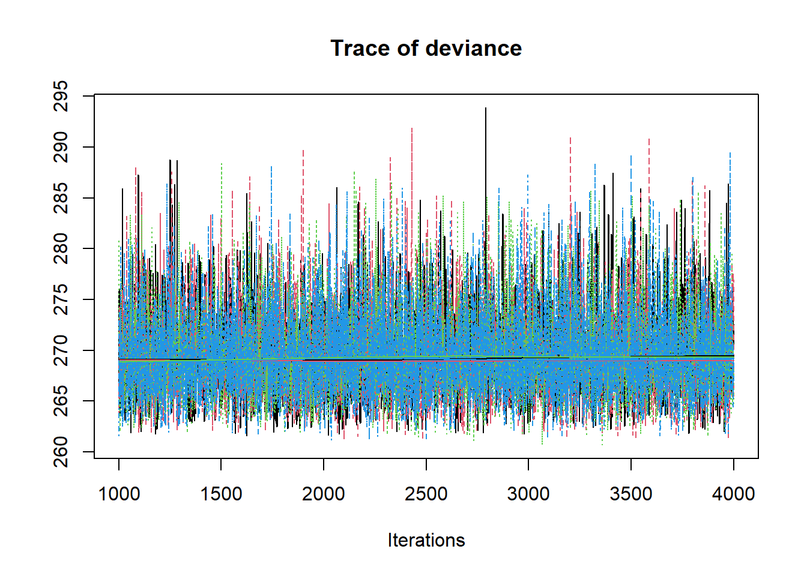
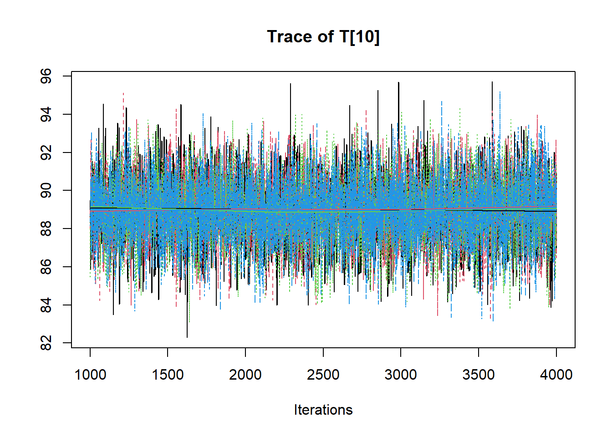
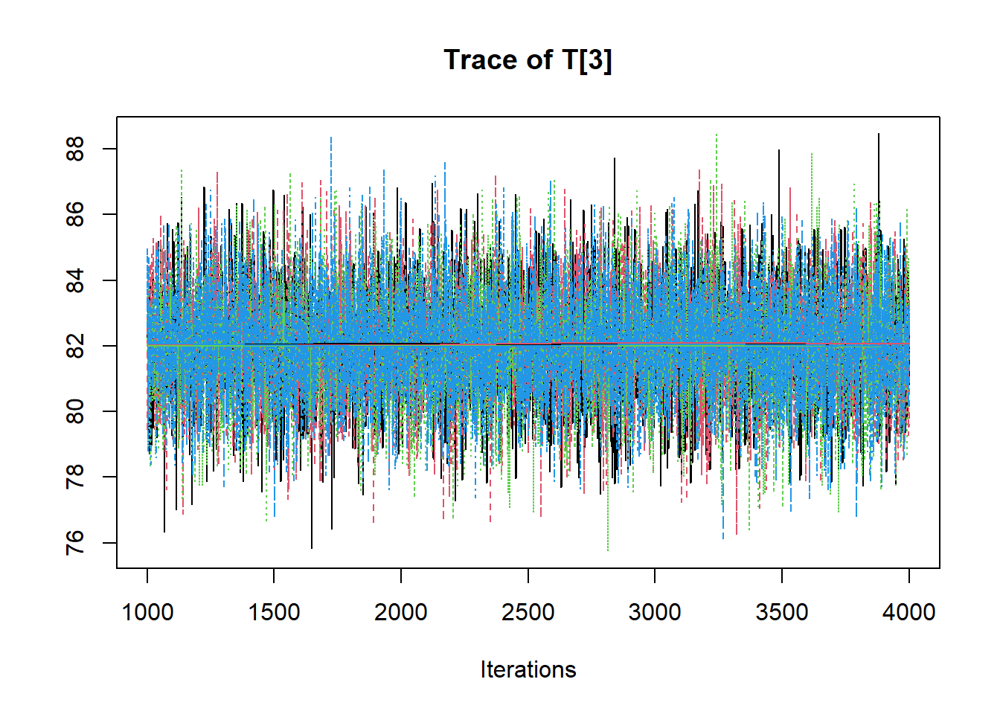
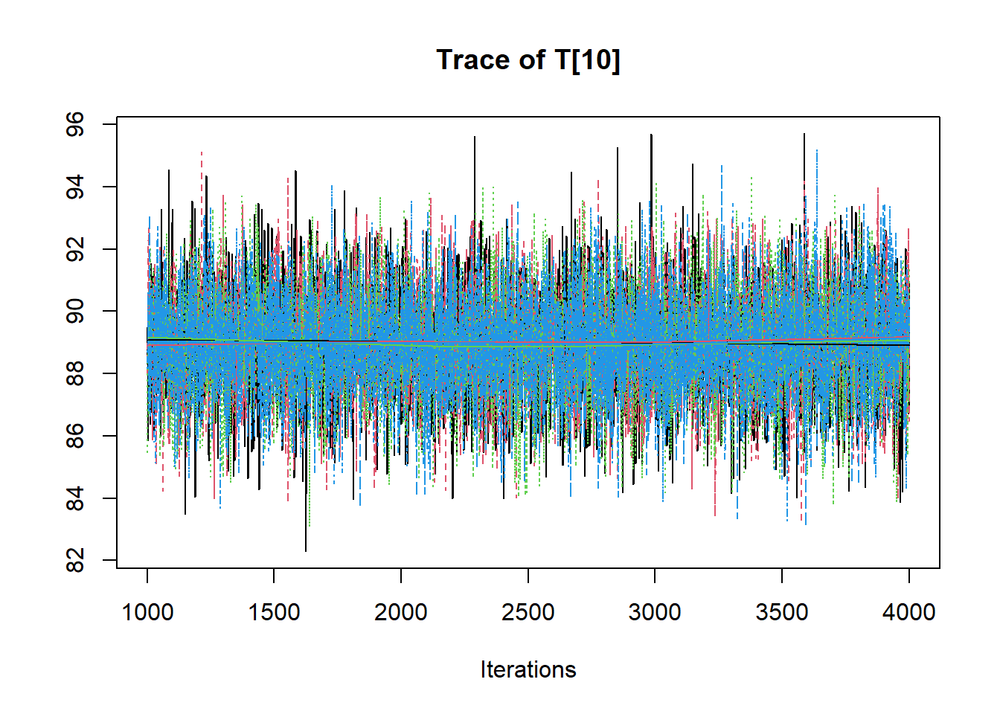
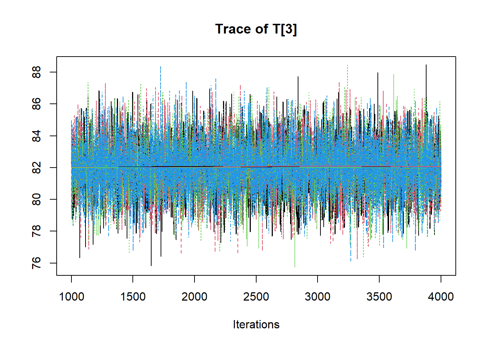
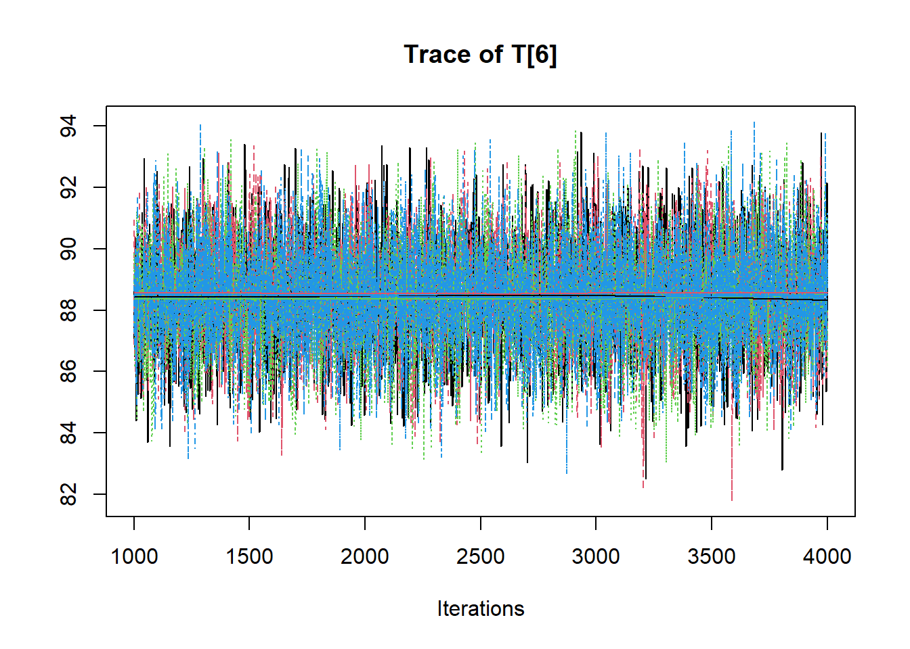
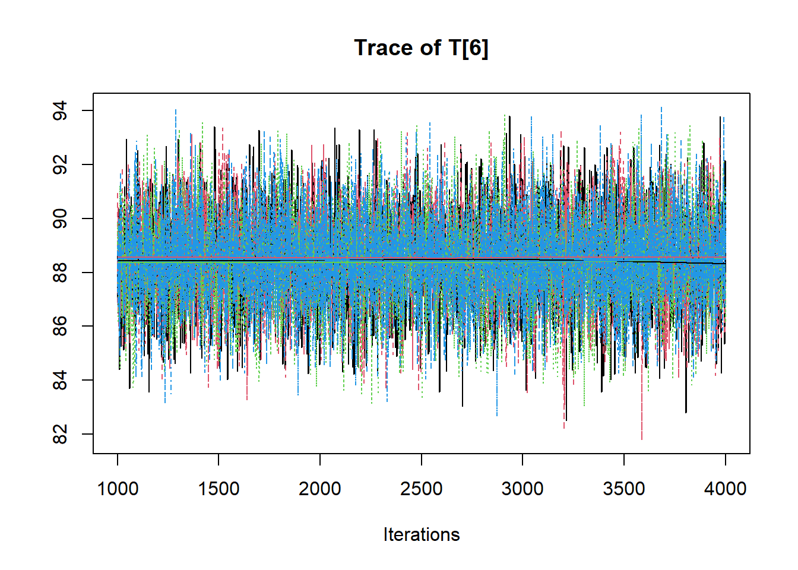
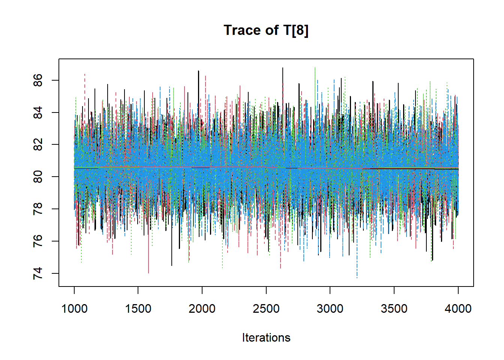
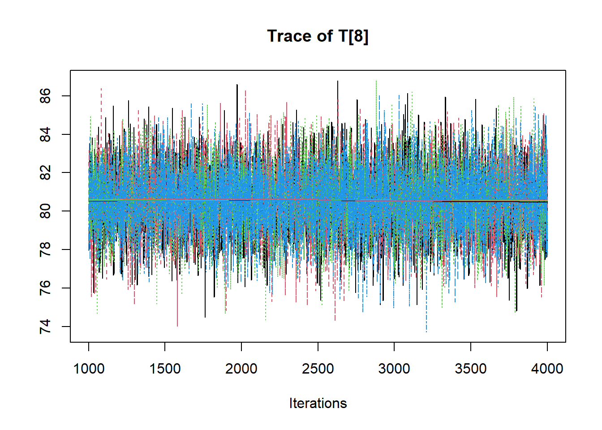

8.6 Example 2 - JAGS
# model code
jags.model.ctt2 <- function(){
############################################
# CLASSICAL TEST THEORY
# WITH KNOWN
# TRUE SCORE MEAN, TRUE SCORE VARIANCE
# ERROR VARIANCE
############################################
############################################
# KNOWN HYPERPARAMETERS
############################################
mu.T <- 80 # Mean of the true scores
sigma.squared.T <- 36 # Variance of the true scores
sigma.squared.E <- 16 # Variance of the errors
tau.T <- 1/sigma.squared.T # Precision of the true scores
tau.E <- 1/sigma.squared.E # Precision of the errors
############################################
# MODEL FOR TRUE SCORES AND OBSERVABLES
############################################
for (i in 1:N) {
T[i] ~ dnorm(mu.T, tau.T) # Distribution of true scores
for(j in 1:J){
x[i, j] ~ dnorm(T[i], tau.E) # Distribution of observables
}
}
}
# data
mydata <- list(
N = 10, J = 5,
x = matrix(
c(80, 77, 80, 73, 73,
83, 79, 78, 78, 77,
85, 77, 88, 81, 80,
76, 76, 76, 78, 67,
70, 69, 73, 71, 77,
87, 89, 92, 91, 87,
76, 75, 79, 80, 75,
86, 75, 80, 80, 82,
84, 79, 79, 77, 82,
96, 85, 91, 87, 90),
ncol=5, nrow=10, byrow=T)
)
# starting values
start_values <- function(){
list("T"=rep(80,10))
}
# vector of all parameters to save
param_save <- c("T")
# fit model
fit <- jags(
model.file=jags.model.ctt2,
data=mydata,
inits=start_values,
parameters.to.save = param_save,
n.iter=4000,
n.burnin = 1000,
n.chains = 4,
n.thin=1,
progress.bar = "none")## module glm loaded## Compiling model graph
## Resolving undeclared variables
## Allocating nodes
## Graph information:
## Observed stochastic nodes: 50
## Unobserved stochastic nodes: 10
## Total graph size: 68
##
## Initializing modelprint(fit)## Inference for Bugs model at "C:/Users/noahp/AppData/Local/Temp/RtmpI5mSk0/model38e016423157.txt", fit using jags,
## 4 chains, each with 4000 iterations (first 1000 discarded)
## n.sims = 12000 iterations saved
## mu.vect sd.vect 2.5% 25% 50% 75% 97.5% Rhat
## T[1] 76.879 1.722 73.558 75.726 76.863 78.018 80.280 1.001
## T[2] 79.068 1.729 75.686 77.884 79.056 80.230 82.478 1.001
## T[3] 82.037 1.712 78.669 80.903 82.043 83.191 85.399 1.001
## T[4] 75.047 1.725 71.677 73.886 75.018 76.224 78.411 1.001
## T[5] 72.631 1.728 69.260 71.462 72.636 73.790 76.066 1.001
## T[6] 88.445 1.712 85.090 87.294 88.452 89.615 91.797 1.001
## T[7] 77.244 1.705 73.959 76.082 77.256 78.399 80.570 1.001
## T[8] 80.561 1.718 77.206 79.402 80.560 81.727 83.921 1.001
## T[9] 80.196 1.706 76.860 79.051 80.177 81.361 83.578 1.001
## T[10] 88.980 1.726 85.579 87.830 88.983 90.122 92.380 1.001
## deviance 269.676 4.383 262.984 266.483 269.050 272.206 279.747 1.001
## n.eff
## T[1] 6200
## T[2] 12000
## T[3] 9500
## T[4] 12000
## T[5] 12000
## T[6] 8900
## T[7] 12000
## T[8] 7000
## T[9] 12000
## T[10] 11000
## deviance 7200
##
## For each parameter, n.eff is a crude measure of effective sample size,
## and Rhat is the potential scale reduction factor (at convergence, Rhat=1).
##
## DIC info (using the rule, pD = var(deviance)/2)
## pD = 9.6 and DIC = 279.3
## DIC is an estimate of expected predictive error (lower deviance is better).# extract posteriors for all chains
jags.mcmc <- as.mcmc(fit)
R2jags::traceplot(jags.mcmc) 

 
 

# gelman-rubin-brook
gelman.plot(jags.mcmc)

# convert to single data.frame for density plot
a <- colnames(as.data.frame(jags.mcmc[[1]]))
plot.data <- data.frame(as.matrix(jags.mcmc, chains=T, iters = T))
colnames(plot.data) <- c("chain", "iter", a)
plot_title <- ggtitle("Posterior distributions",
"with medians and 80% intervals")
mcmc_areas(
plot.data,
pars = c("T[1]", "T[2]", "T[3]"),
prob = 0.8) +
plot_title
# I prefer a posterior plot that includes prior and MLE
MLE <- rowMeans(mydata$X)## Error in rowMeans(mydata$X): 'x' must be an array of at least two dimensionsprior_t <- function(x){dnorm(x, 80, 6)}
x.t<- seq(50.1, 100, 0.1)
prior.t <- data.frame(tr=x.t, dens.t = prior_t(x.t))
cols <- c("Posterior"="#0072B2", "Prior"="#E69F00", "MLE"= "black")#"#56B4E9", "#E69F00" "#CC79A7"
p1 <- ggplot()+
geom_density(data=plot.data,
aes(x=`T[1]`, color="Posterior"))+
geom_line(data=prior.t,
aes(x=tr, y=dens.t, color="Prior"))+
geom_vline(aes(xintercept=MLE[1], color="MLE"))+
scale_color_manual(values=cols, name=NULL)+
theme_bw()+
theme(panel.grid = element_blank())
p2 <- ggplot()+
geom_density(data=plot.data,
aes(x=`T[2]`, color="Posterior"))+
geom_line(data=prior.t,
aes(x=tr, y=dens.t, color="Prior"))+
geom_vline(aes(xintercept=MLE[2], color="MLE"))+
scale_color_manual(values=cols, name=NULL)+
theme_bw()+
theme(panel.grid = element_blank())
p3 <- ggplot()+
geom_density(data=plot.data,
aes(x=`T[5]`, color="Posterior"))+
geom_line(data=prior.t,
aes(x=tr, y=dens.t, color="Prior"))+
geom_vline(aes(xintercept=MLE[5], color="MLE"))+
scale_color_manual(values=cols, name=NULL)+
theme_bw()+
theme(panel.grid = element_blank())
p3 <- ggplot()+
geom_density(data=plot.data,
aes(x=`T[10]`, color="Posterior"))+
geom_line(data=prior.t,
aes(x=tr, y=dens.t, color="Prior"))+
geom_vline(aes(xintercept=MLE[10], color="MLE"))+
scale_color_manual(values=cols, name=NULL)+
theme_bw()+
theme(panel.grid = element_blank())
p1 + p2 + p3 + plot_layout(guides="collect")